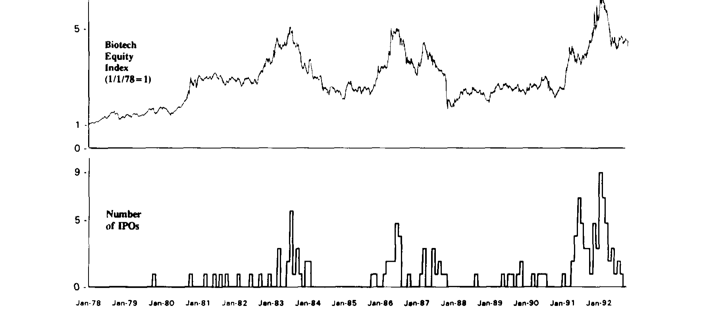
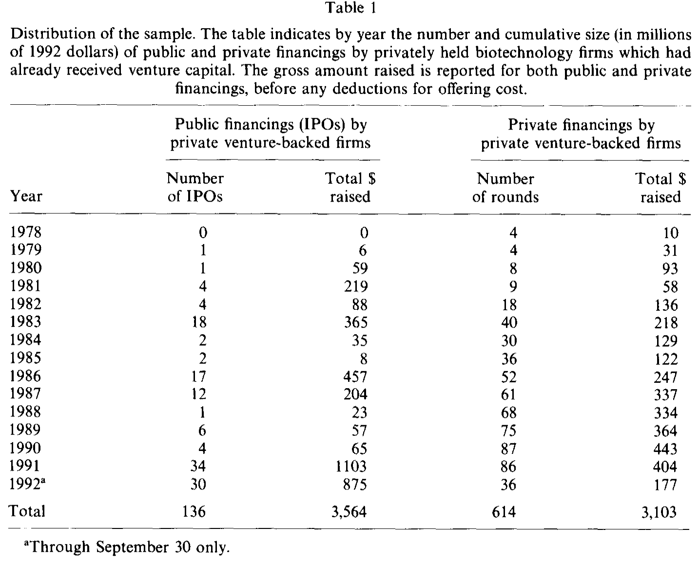
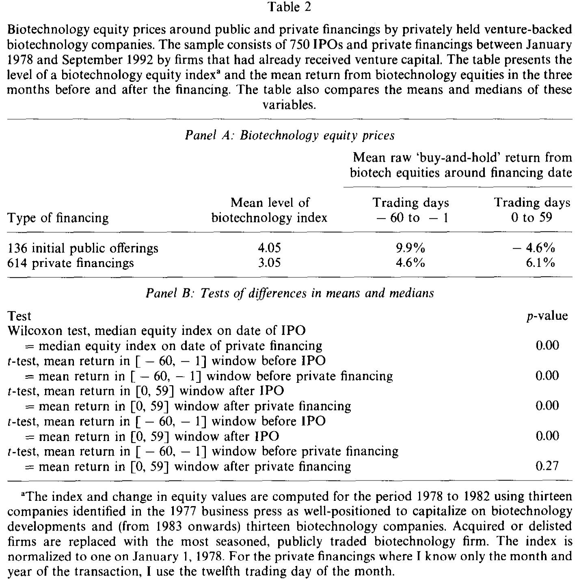
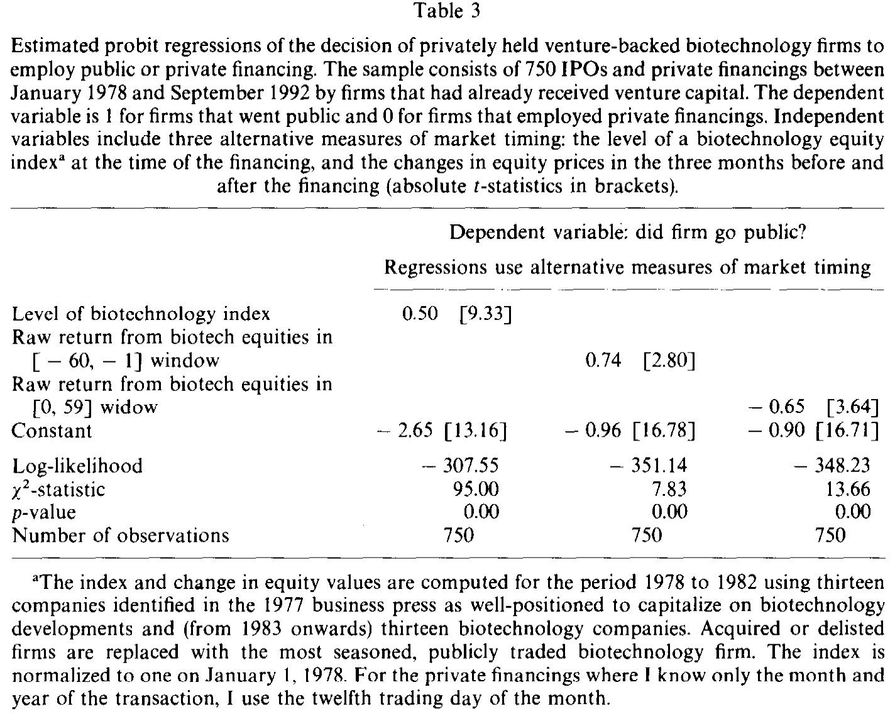
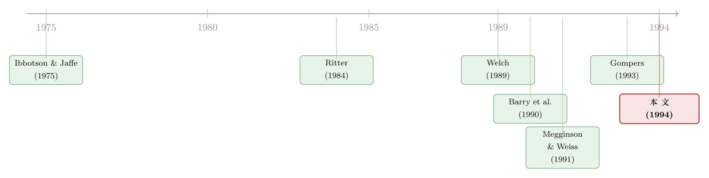

上市不上市，风投在等市场的最高点
本文读的是 Lerner (1994, Journal of Financial Economics)：用 1978–1992 年 350 家私人生物科技公司、750 笔融资，作者发现风险投资家会在生物科技板块估值最高时把公司推上市、在估值低迷时改用私募续命；IPO 当日的板块指数均值是 4.05，私募当日只有 3.05，差异在 1% 水平上显著。而越是经验老到的风投，越能精准地把 IPO 卡在市场的短期波峰上。
1 引言：风投的钱，是从哪一笔交易里赚出来的？
先说一个或许会让人意外的数字。Venture Economics（1988a）算过一笔账：风险投资家（venture capitalist）投进一家最终上市的公司，平均每 1 美元的投资，能在 4.2 年的持有期里换回 1.95 美元的现金回报（这还是本金之外的部分）；而退而求其次——投进一家最终被并购的公司——同样的 1 美元，3.7 年里只换回 40 美分。
换句话说，风投这门生意的利润，绝大部分压在「上市」这一个出口上。被并购、被清算，都只是聊胜于无的退路。
于是一个再自然不过的问题浮上来了：既然 IPO 这么要紧，而我们又早就知道股市有「冷」有「热」——Ibbotson 和 Jaffe（1975）就记录过新股发行的「热销市场」（hot issue market）——那么，专业到天天和招股书打交道的风投，会不会刻意挑在估值最高的时候把公司送上市，而在估值低迷时按兵不动、改用私募给公司续命？
这正是 Lerner（1994）要回答的问题。听上去像一句常识，但要把它干净地证出来，远没有那么容易。本文最漂亮的地方，不在于它「发现风投会择时」，而在于它找到了一组几乎完美的对照——同一批公司的私募融资——把「择时」从「好年景里大家都多融资」这个平庸的替代解释里，硬生生地剥了出来。
2 为什么偏偏盯着生物科技？
要测「择时能力」，你得先有一个能自由选择「现在上市」还是「再等等」的样本。大多数行业里，公司上市的时点被太多东西绑住了：工厂要钱、扩产要钱、需要新的外部监督，这些「真实需求」会把上市时点推着走，让你分不清究竟是市场高了才上市，还是缺钱了才上市。
生物科技是个难得的例外。一款生物工程药物或农业产品，从研发到上市常常要十年以上；这些公司在上市之后很久，仍停留在「烧钱做研发」的阶段，既不需要为建厂砸下大笔前期投入，也不急着马上变现。更关键的是，风投是分轮给钱的——每一轮融资都附带一次对公司状态的正式复核，而每一次复核，本质上都是一道选择题：这一轮，是去公开市场（IPO），还是再做一轮私募？
正因为每一轮都摆着这道选择题，生物科技公司的风投才真正拥有「踩着市场节奏挑时点」的自由。Lerner 自己把话说得很清楚：在别的行业，资本的需求、监督需求的变化，可能比市场行情更主导上市决策；而在生物科技里，这些干扰被压到了最小，于是样本提供了一个「对择时能力更精确的检验」。
3 识别策略：把「上市」与「私募」放在同一根曲线上
接下来是全文的枢纽。
Lerner 没有去问「IPO 是不是发生在高点」这种容易被反驳的问题——因为反驳者会立刻说：好年景投资机会好，公司自然多融资，IPO 多很正常，这和「择时」没关系。
他的破解之道，是同时盯住两种融资：公开的 IPO，和私下的私募轮。两者都由同一批公司、同一批风投做出。如果「IPO 扎堆在高点」只是因为「好年景大家都爱融资」，那么私募也该跟着扎堆在高点；可如果只有 IPO 追着波峰跑、私募却对行情无动于衷，那唯一说得通的解释就是——风投在做替代：行情好就发公开股，行情差就发私募股。
这就是识别的全部精髓。私募，成了 IPO 的「对照组」。
为了量化这件事，作者构造了一个生物科技股权指数（biotechnology equity index）。1978–1982 年还没有足够多「纯」生物科技上市公司，他就用 1977 年商业媒体点名的 13 家「有望吃到生物科技红利」的可比公司；1983 年起换成 13 家真正专注生物科技的上市公司，两套指数在交接的 1982–1983 年日收益相关系数高达 0.96。指数在 1978 年 1 月 1 日归一化为 1。
把每月的 IPO 数量、私募数量与这条指数画在一起，图景一目了然：IPO 的高峰，精准地踩在 1983、1986、1991–92 这几个估值波峰上；而私募的节奏，几乎看不出任何与行情的对应。

Figure 1: The timing of initial public offerings by privately held venture-backed biotechnology com-
把这张「眼睛能看出来」的图，翻译成一行回归，就是本文的核心设定。作者用每一笔「已获风投支持的私人公司」的融资作为一个观测，被解释变量是一个虚拟变量（1 表示这一笔是 IPO，0 表示是私募）：
这里的 \(TIMING_{ijt}\) 有三种度量：融资当时生物科技指数的水平值、融资前三个月板块的原始收益、以及融资后三个月的原始收益。直觉是：如果风投真的在择时，那么 IPO 应该既发生在指数的绝对高位，又恰好卡在一个短期波峰上——也就是「之前涨得好、之后开始跌」。
4 数据
样本是 1978 年 1 月到 1992 年 9 月间、已经拿过风投的 350 家私人生物科技公司，合计 750 笔融资：其中 136 笔 IPO、614 笔私募。公开融资共募得 36.4 亿美元（1992 年币值），私募共募得 31.0 亿美元（都是未扣发行费用的毛额）。
数据来源本身就是一项苦功。风投不像共同基金，无须在公开文件里披露全部投资，因此私人公司的融资信息极难收集。作者以 Venture Economics 的投资数据库为底本，再用 Recombinant Capital 的生物科技专门数据库、SEC 申报文件（招股书的「Certain Transactions」与 S-1 的「Recent Sales of Non-Registered Securities」等栏目）、以及对公司和风投本人的电话核实，一笔一笔地交叉验证、纠错。这些公司从第一轮融资到上市，最少只经历过 1 轮、最多 8 轮风投；136 家 IPO 公司上市前的融资轮数中位数是 3 轮、均值 3.2 轮，平均成立 4.8 年后上市。

Table 1
5 主要结果：只有 IPO 在追波峰
先看最朴素的对比。Table 2 的 Panel A 给出：136 笔 IPO 发生时，生物科技指数的均值是 4.05；614 笔私募发生时，均值只有 3.05。用非参数的 Wilcoxon 检验，这个差异在 1% 水平上显著（p 值 0.00）。
有人会说，指数一路上涨有一半是通胀和时间溢价撑起来的——IPO 集中在后期，自然碰上更高的指数。Lerner 早料到这一招：他把指数用 GDP 平减指数、以及「通胀加 5% 年溢价」分别去趋势，结论纹丝不动。去通胀后，IPO 时点指数均值 2.10、私募 1.69；再叠加 5% 年溢价后，是 1.26 对 1.03，差异依旧在 1% 水平上显著。
更见功力的是「短期波峰」的检验。作者算了 IPO 前后各三个月、板块的等权买入持有收益：IPO 之前的窗口 $(-60,-1)$ 平均涨 9.9%，而在 IPO 当日收盘买入、持有到第 59 个交易日，平均亏 4.6%。一前一后，差异在 1% 水平上显著。这正是「踩在波峰上」的统计指纹——之前还在涨，上市之后立刻回落。
而私募呢？前三个月 +4.6%、后三个月 +6.1%，前后几乎没有差别（Panel B 显示，私募前后收益之差的 p 值是 0.27，根本不显著）。对照组安静地待在那里，反衬出 IPO 的择时是何等刻意。

Table 2
把这一切收进 probit 回归（Table 3），三种择时度量各自都显著：
- 指数水平的系数是 0.50，t 值高达 9.33——指数越高，这一笔越可能是 IPO；
- 融资前三个月收益的系数 0.74（t = 2.80），正号；
- 融资后三个月收益的系数 −0.65（t = 3.64），负号。
「之前涨得越多、之后跌得越狠，越可能是一笔 IPO」——三个系数的符号，把「在短期波峰上市」这件事说得明明白白。

Table 3
6 老手的本事
故事到这里还差一层。Lerner 进一步问：是不是所有风投都会择时，还是只有某些人擅长？
1978–1992 这段样本期，恰好是美国风投行业极速扩张、新人涌入的年代。1979 年劳工部一纸政策松绑，养老金得以大举进入风投合伙制，整个行业管理的资金（按 GDP 平减后）在 1978 到 1990 年间翻了六倍，大量新合伙企业入场。新老风投并存，正好给「经验是否带来择时优势」提供了横截面的差异。
结论是：经验更丰富的风投，在把公司卡在市场波峰上市这件事上，明显更老练。这与后来文献里反复出现的主题——年轻风投急于「建功立业」（grandstanding）、老练风投则更懂得拿捏火候——彼此呼应（关于年轻风投抢着把公司推上市以博取声誉，可参见《grandstanding-in-the-venture-capital-industry》与《「认证」的反面：原来风投把新股「打折」得更狠》）。
7 两个对手假说，怎么挡？
任何一个「市场择时」的结论，都要先迈过两道坎。
第一道坎：会不会是反向因果？ 也许不是风投挑高点上市，而是「好公司」恰好在好年景成熟、于是上市，顺带把指数也推高了。但本文的对照设计挡住了这条路：如果是「好公司在好年景成熟」，那它既可以发 IPO 也可以发私募，私募同样该扎堆在高点——可私募偏偏不动。
第二道坎：会不会只是「好年景投资机会好、融资活动多」？ 这正是文章开头那句平庸解释。Lerner 的回答是：IPO 量与公开市场估值的正相关，不仅来自好年景里更旺盛的融资需求，更来自「用公开股权替代私募股权」——是替代，不是单纯的总量扩张。证据还是那一条：私募活动的水平，在 1983、1986、1991–92 这些高估值年份里「变化甚微」。总量没怎么涨，只是融资从私募「搬」到了公开市场。
值得一提的是，作者还操心了一个计量细节：IPO 与私募在时间上扎堆，使得用来算收益的 60 个交易日窗口大量重叠，独立性假设被破坏，可能高估显著性。他借鉴 Hansen 和 Hodrick（1980）、Meulbroek（1992）处理重叠观测的广义最小二乘（GLS）思路，构造一个方差—协方差矩阵 \(\Omega\)：当两个 60 日窗口不重叠时令协方差为零，重叠时令其与重叠程度成正比，再以 \((X'\Omega^{-1}X)^{-1}\) 计算标准误。这样校正之后，IPO 前后收益的差异仍在 1% 水平上显著。结论很稳。
8 文献脉络
把这篇论文放回它生长的脉络里，它其实站在两条河流的交汇处。
一条河是 IPO 的「热销市场」与长期表现。Ibbotson 和 Jaffe（1975）最早记录了新股的「热销市场」，Ritter（1984）细致刻画了 1980 年那一波热潮；到 Ritter（1991）和 Loughran、Ritter（1993），人们发现 IPO 的长期回报之所以糟糕，部分正是因为它们扎堆在股市波峰附近发行。Shiller（1990）与 Shiller、Pound（1989）更进一步提出「表演者假说」（impresario hypothesis）：IPO 像一阵阵风潮，承销商顺势把公司赶向市场。Lerner 这篇文章，等于给「IPO 扎堆在高点」这件事，找到了一个主动的择时者——风投——并量化了他的能力（与本文同源的「上市时机」思路，亦可参见《上市，不是终点，是一份你随时可以「赎回」的期权》；而关于 IPO 数量为何潮起潮落，见《新股的潮汐：为什么有的年份挤破头上市，有的年份门可罗雀？》）。

另一条河是 风险投资本身的实证研究。Barry、Muscarella、Peavy 和 Vetsuypens（1990）记录了风投在公司上市过程中的角色与控制权，Megginson 和 Weiss（1991）提出风投的「认证」（certification）功能，Sahlman（1990）梳理了风投组织的结构与治理。这些工作告诉我们风投手里握有董事席位、强力控制权乃至卖出回售权——也就是说，风投有能力主导「何时、如何」上市。Lerner 把这种能力的一个具体面向——择时——拆出来，单独称重。再往后，Gompers（1993）的「建功立业」假说则补上了「不同风投择时能力为何不同」的另一半（VC 究竟从一家公司里能赚回多少，另见《看上去赚翻了的风险投资，其实只是一把彩票》）。
评论与延伸（Q&A + 研究方向）
(a) 几个可能的疑问
Q：这篇文章测的「择时」，和散户口中的「市场择时」是一回事吗？
不完全是。散户择时是猜大盘明天涨跌；本文的择时是在多个融资轮里挑出口——风投本来就要一轮一轮地给钱，每一轮都能选「上市」或「再等等」，所以「择时」对他们近乎免费。这也是为什么作者要挑生物科技：唯有当公司不缺现金、能从容地等，观察到的时点才真正反映「挑高点」的意图，而非「缺钱了被迫上市」。
Q：私募作为对照组，真的干净吗？万一私募也有自己的择时逻辑？
这是识别的关键软肋，但数据替它辩护了：私募融资前后三个月的板块收益分别是
+4.6%和+6.1%，前后之差 p 值0.27，毫无短期波峰的痕迹；私募的水平在高估值年份也「变化甚微」。也就是说，私募近似一个对行情中性的对照组。当然，更彻底的检验需要私募轮的估值数据，而那在 1990 年代初极难获得。
Q：会不会只是幸存者偏差——失败的公司没进样本？
作者下了大功夫去捞失败公司（他甚至沿用自己在 USGAO 1989 报告里开发的、追踪失败高科技企业经理人的办法）。但被解释变量是「这一笔融资是 IPO 还是私募」，而非「公司是否成功」，所以幸存者偏差对核心回归的冲击有限。真正的风险在样本之外：那些从未拿到第二轮、早早消失的公司。
Q：用 13 只股票拼出来的指数，会不会太单薄、太容易被个股噪声带偏？
这是早期生物科技研究绕不开的硬约束——1983 年前根本没有足够多的「纯」生物科技上市公司。作者用 1977 年商业媒体点名的可比公司过渡，并验证两套指数交接期日收益相关系数达
0.96。指数窄是事实，但结论在去通胀、去趋势、GLS 校正后都稳，说明不是少数个股的偶然。
Q：风投上市时其实很少卖股票，那「择时」对他们有什么好处？
正是 Barry、Muscarella、Peavy、Vetsuypens（1990）指出风投在 IPO 当日很少抛售。但在高点上市能最小化风投持股的稀释；而且按 Allen-Faulhaber（1989）、Grinblatt-Hwang（1989）、Welch（1989）的连续发股信号模型，热市里更易实现的「适度折价」会给投资者留个好印象，方便日后增发。择时的收益，落在稀释和后续融资上，而不在当天的卖出。
Q：这个结论能推广到生物科技以外吗？
要小心。作者特意挑生物科技，正因为它「不缺钱、能等」，把真实融资需求的干扰压到了最小。在重资产、扩张急迫的行业，上市时点更多被资本需求和监督需求牵着走，「纯择时」的成分会被稀释。换句话说，本文量出的，是一个上限友好的环境里的择时能力。
(b) 几个可能的研究问题与提案
1. 把「择时」从股权市场搬到公司债与信用市场。 - 【经济故事】风投在股权高点上市，本质是「在投资者最愿意付高价时卖给他们」。同样的逻辑，发债企业是否会在信用利差最窄、风险偏好最高时集中发行高收益债？尤其是 PE 控股的公司，手握更强的发行时点控制权。 - 【可行性】高。Mergent FISD、TRACE 提供发行时点与利差，PE 持股可由 Pitchbook/Capital IQ 匹配；用「信用利差水平 + 利差的短期变动」复刻本文的 probit 设定即可，识别上同样可用「同一发行人的银行贷款 vs 公开债」做对照组。
2. 外资持有人是否也在「择时」退出？ - 【经济故事】把「风投挑高点上市」换成「外资在本币/股市高点减持」。外资若真有择时能力，其卖出应集中在估值波峰——这与「外资是稳定器还是放大器」的长期争论直接相关。 - 【可行性】中。需要细到月度、个股层面的外资持仓（如韩国 KSD 那类托管数据），识别难点在于把「择时」与「被动再平衡」分开——本文「私募对照组」的思路可以借用，例如以外资的被动指数权重变动作为对照。
3. 择时能力是否随风投「学习」而增强？ - 【经济故事】本文发现老练风投更会择时，但这是横截面的。若能追踪同一家风投随基金代际推进的择时表现，就能区分「能者本来就强」与「干中学」。 - 【可行性】中。Venture Economics/Pitchbook 可构造风投—基金—被投公司的面板；识别上要处理「好风投吸引好项目」的内生匹配，可考虑用风投合伙人跳槽带来的经验外生变动。
4. IPO 择时与上市后流动性的联动。 - 【经济故事】若风投在板块高点上市，这些公司上市后是否系统性地面临更差的二级市场流动性与更弱的长期表现？这能把本文与 IPO 长期跑输（Ritter, 1991）这条线缝在一起。 - 【可行性】高。CRSP 提供上市后价格与成交量，按「上市时点指数水平」分组比较 Amihud 非流动性与长期异常收益即可，数据与方法都成熟。
参考文献
Allen, F., & Faulhaber, G. (1989). Signaling by underpricing in the IPO market. Journal of Financial Economics 23(2), 303–323.
Barry, C. B., Muscarella, C. J., Peavy, J. W., & Vetsuypens, M. R. (1990). The role of venture capital in the creation of public companies: Evidence from the going-public process. Journal of Financial Economics 27(2), 447–471.
Gompers, P. A. (1993). Grandstanding in the venture capital industry. Working paper, University of Chicago.
Grinblatt, M., & Hwang, C. Y. (1989). Signaling and the pricing of new issues. Journal of Finance 44(2), 393–420.
Hansen, L. P., & Hodrick, R. J. (1980). Forward exchange rates as optimal predictors of future spot rates: An econometric analysis. Journal of Political Economy 88(5), 829–853.
Ibbotson, R. G., & Jaffe, J. F. (1975). "Hot issue" markets. Journal of Finance 30(4), 1027–1042.
Lerner, J. (1994). Venture capitalists and the decision to go public. Journal of Financial Economics 35(3), 293–316.
Loughran, T., & Ritter, J. R. (1993). The timing and subsequent performance of IPOs: The U.S. and international evidence. Working paper, University of Illinois.
Megginson, W. C., & Weiss, K. A. (1991). Venture capitalist certification in initial public offerings. Journal of Finance 46(3), 879–903.
Meulbroek, L. (1992). A comparison of forward and futures prices of an interest rate-sensitive financial asset. Journal of Finance 47(1), 381–396.
Ritter, J. R. (1984). The "hot issue" market of 1980. Journal of Business 57(2), 215–240.
Ritter, J. R. (1991). The long-run performance of initial public offerings. Journal of Finance 46(1), 3–27.
Sahlman, W. A. (1990). The structure and governance of venture-capital organizations. Journal of Financial Economics 27(2), 473–521.
Shiller, R. J. (1990). Speculative prices and popular models. Journal of Economic Perspectives 4(2), 55–65.
Welch, I. (1989). Seasoned offerings, imitation costs, and the underpricing of initial public offerings. Journal of Finance 44(2), 421–449.